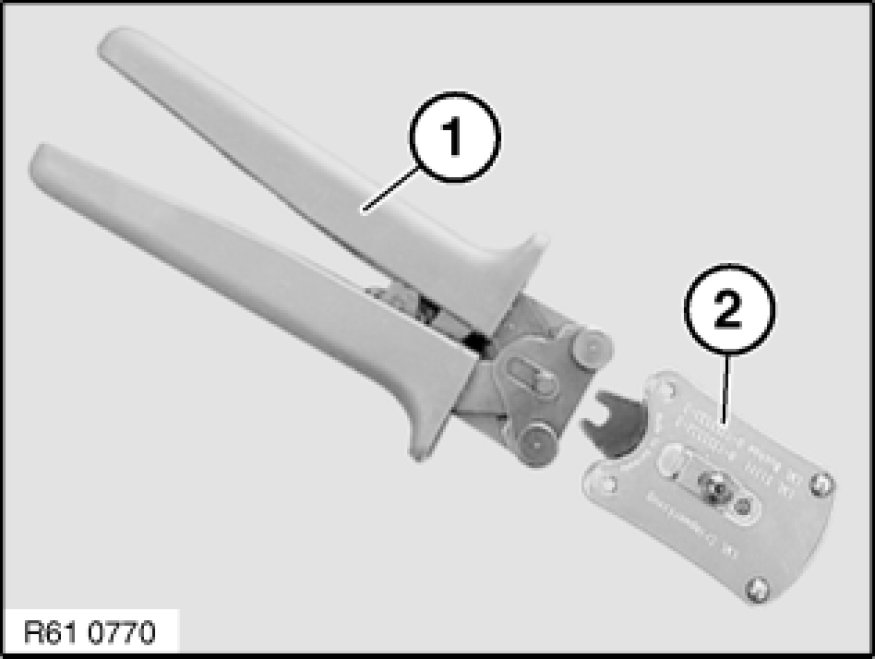
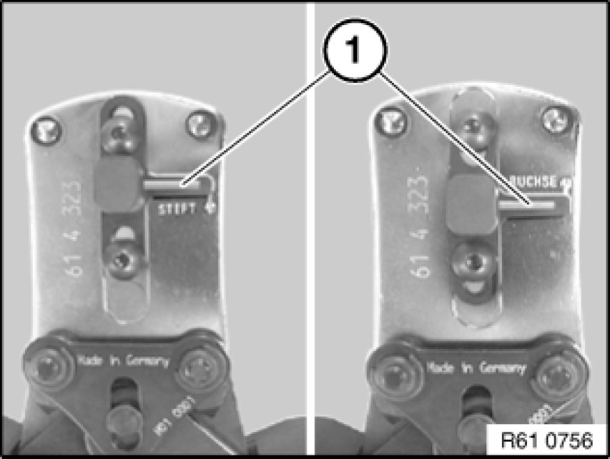
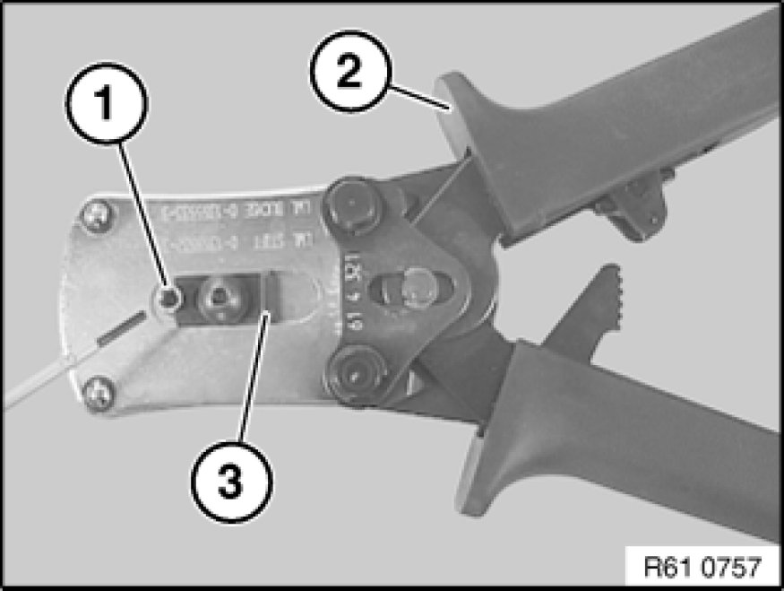
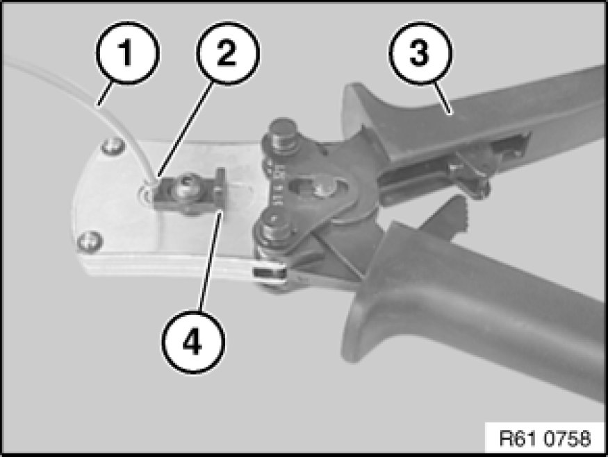
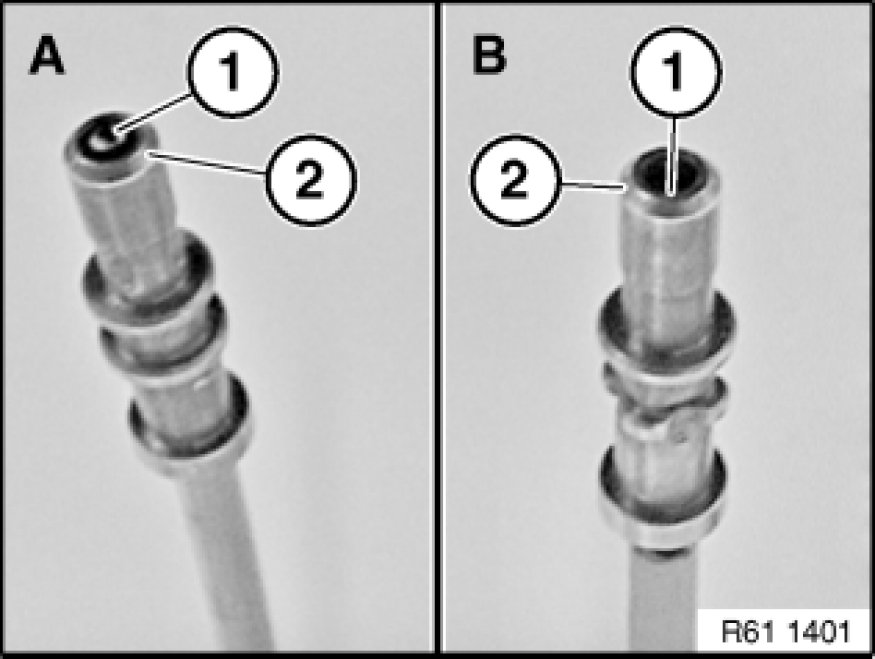

61 13 ... Crimping Optical Fibers
61 13 ... - Crimping optical fibers

Special tools required:
- 61 4 320 61 4 320 Crimping Set with Pliers

To crimp optical fibers, use pliers 61 4 321 (1) in conjunction with crimping head 61 4 323 (2) from crimping set 61 4 320 61 4 320 Crimping Set with Pliers.
Note:
Pliers (1) open automatically as far as they will go when handles are pressed together.

Move contact guide by means of stop lever (1) into corresponding position (pin contact or jack).

Open pliers (2).
Place pin contact or jack (1) in crimping head and secure with locking lever (3).

Note:
Follow procedure for cutting and stripping insulation from optical fibers 61 13 ... Cutting Off, Stripping Insulation and Cutting Optical Fibres to Length.
Insert stripped optical fiber (1) as far as it will go into pin contact or jack (2).
Close pliers (3) fully.
Open pliers (3) and locking lever (4).
Remove optical fiber (1).

Important!
Make sure optical fiber is correctly seated in jack.
Right (A)
End of optical fiber (1) must be flush with tip of pin contact (2).
Wrong (B)
End of optical fiber (1) is not flush with tip of pin contact (2).